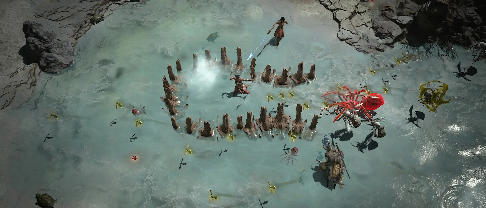
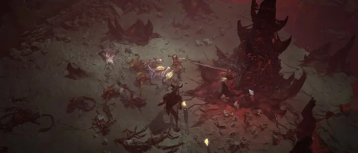

Discover the world of Sanctuary as you battle through its expansive lands. Join fellow adventurers, retake besieged towns, delve into corrupted dungeons, and uncover lost secrets as you fight for the fate of the world.
Battles take a turn when you enter PvP zones. Mark yourself as “hostile” and these high-risk, high-reward areas of Sanctuary allow you to take a swing at other players for their valuable loot. But be warned. This also opens you up to being swung at.
Heroic adventurers can clear out Strongholds such as this one, claiming them once again for the citizens of Sanctuary. The town will never be the same, but victory here can leave a lasting mark and transform this hostile region into a safe haven.
